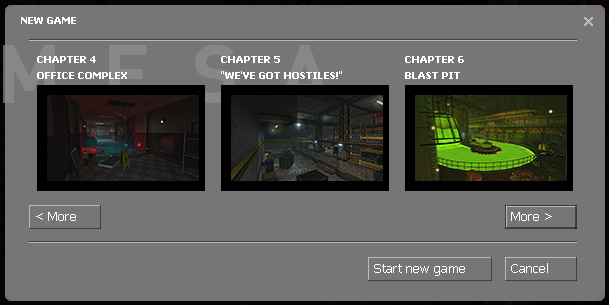

A section of the game just not to your liking? Tell us what your least favourite chapter was and why.
Mine would be Residue Processing.
Conveyor belt mazes are still plentiful, and in the larger portions of the factory there are few ladders to use for backtracking after miscalculating a jump. Whoever was in charge of these levels probably aimed to stay true to the original, which they did very well, but some of these parts of could have benefit from a little reinventing.